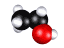

in the Hill/Loprete Lab
funded by the
National Science Foundation
|
in the Hill/Loprete Lab funded by the National Science Foundation |

The goal of this project is to characterize a new collection of mutations in the model research organism Aspergillus nidulans. These gene defects (termed cal mutations) cause loss of cell wall integrity, which is detected by exposing the organisms to the wall-compromising agent Calcofluor W hite and looking for reduced growth. For more information of the organism, the mutations, and the methods employed in the research, interested students are directed to the following website: http://www.rhodes.edu/biology/hill/hill/Studentresearch.html
Eligibility
These fellowships are open to rising sophomores, juniors, and seniors who are majoring in biology, chemistry, or Biochem & Molecular Biology (BMB). Students whose career goals include scientific research in this area (encompassing genetics, microbiology, cell biology, biochemistry, and molecular biology) are especially encouraged to apply. While previous coursework (with lab) in these areas is very helpful in an application, exceptions can be considered for students who show strong promise in other ways.
Benefits and Expectations
Stipend:$4300 (plus the benefit of reduced-expense housing in Rhodes dorms)Travel Benefits:
Money is budgeted for each student researcher to travel to one professional meeting to present results of his or her research, when that work comes a sufficient degree of completion.Duration of Research:
10 weeks, full-timeStarting Date:
Normally on the second or third Monday following graduation (depends on the travel schedules of the Principal Investigators), though alternate starting dates can be negotiated.
How to Apply
Students interested in applying for a summer NSF Fellowship to work on this project should begin by contacting one of the directing professors to learn about upcoming openings. In addition, be sure you visit the professors' webpages (links below) for a fuller picture about research activities in this lab.
Dr. Terry Hill

webpage:  |
Dr. Darlene Loprete
|
Then download the application form below, and be sure to turn it in to Dr. Hill or Dr. Loprete by whatever deadline has been requested.
You can download the application form by clicking on the following icon:
 Application Form for NSF Fellowships
Application Form for NSF Fellowships
Link to PDF